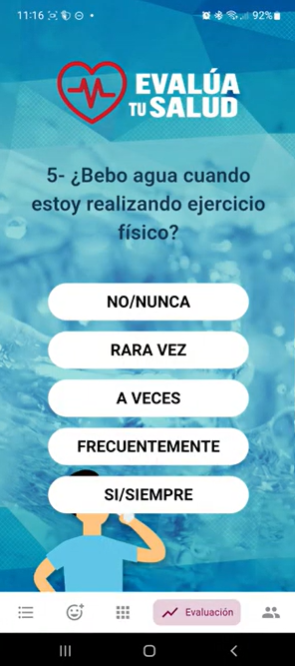
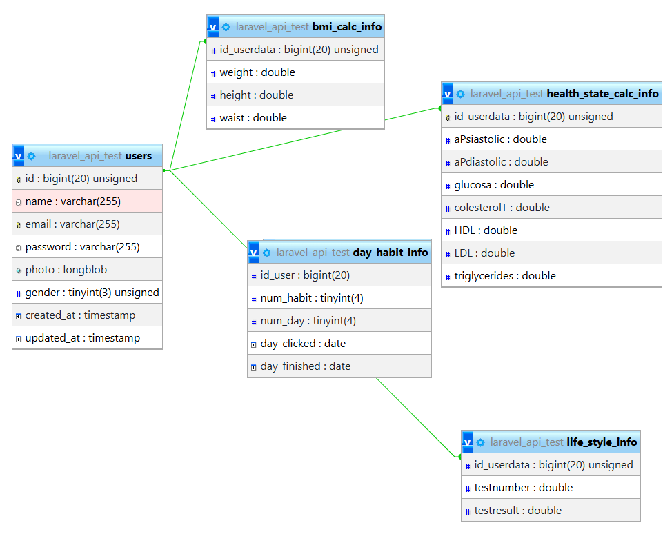

Proyecto 1
Desarrollador Full Stack / Móvil
QVS Hábitos Saludables
Contexto y Problema
App enfocada en hábitos saludables compartidos como Iglesia Adventista, sirviendo de manera preventiva y curativa frente a los problemas de salud actuales.
Stack Tecnológico
Flutter/Dart
Laravel
MySQL
Enlaces y Accesos
Evidencia Técnica y Visual

Pregunta del formulario tracking del hábito del agua
Esquema DB usado en phpMyAdmin